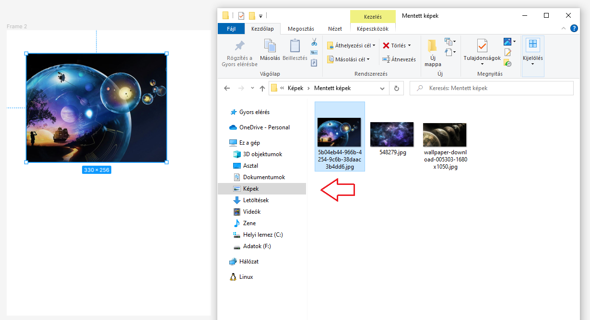
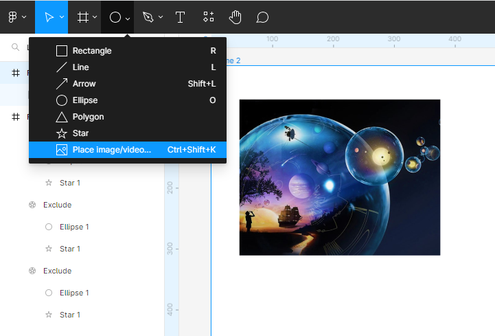
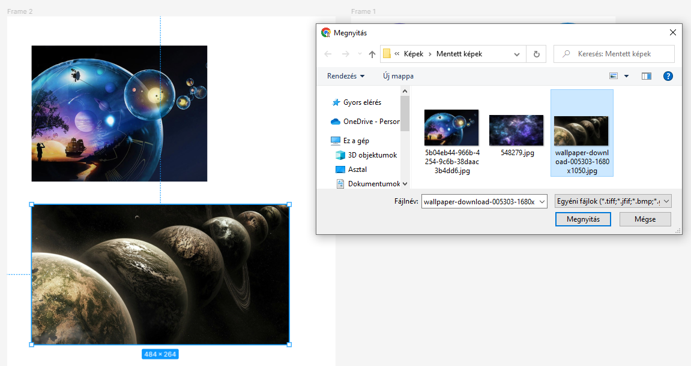
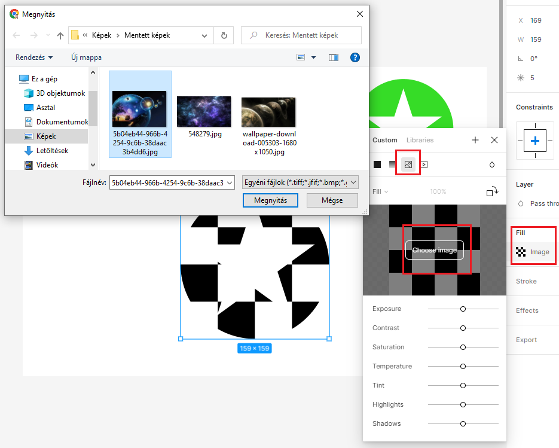
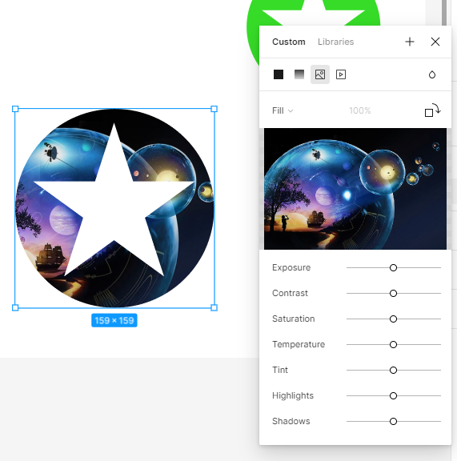

arrow_circle_up
Képek - Images:
-
Hogyan tudunk képet (image)
elhelyezni a kereten (Frame)
belül? Több lehetőségünk is van.
-
Drag And Drop: simán behúzzuk a
File Manager-ből. Azután formázom.

-
Eszköztárból (Toolbar): ekkor a
legördülő sáv használatával szúrjuk be a képet.


-
Tervezés táblából (Design Pane):
ebben az esetben a Fill mezőben
szereplő Image lehetőséget
használom.

-
Látható, hogy van néhány lehetőségünk a finomabb
beállításokra.

Források:
Figma
Wikipedia